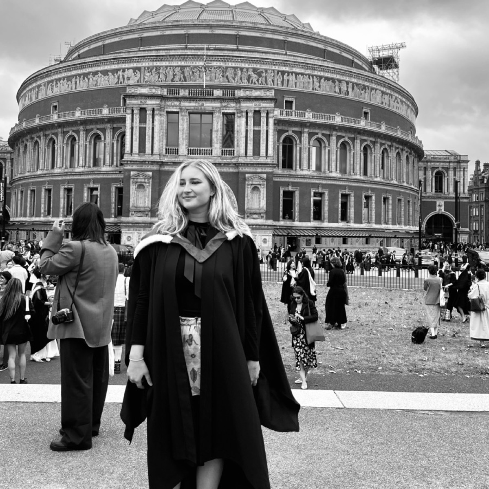
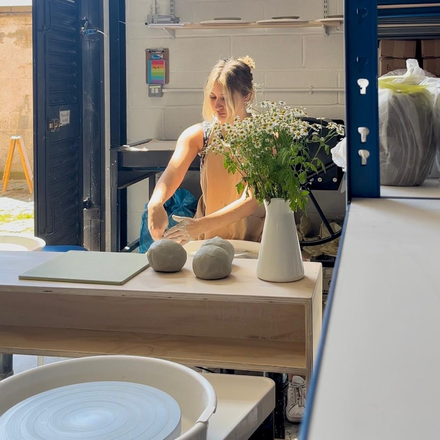
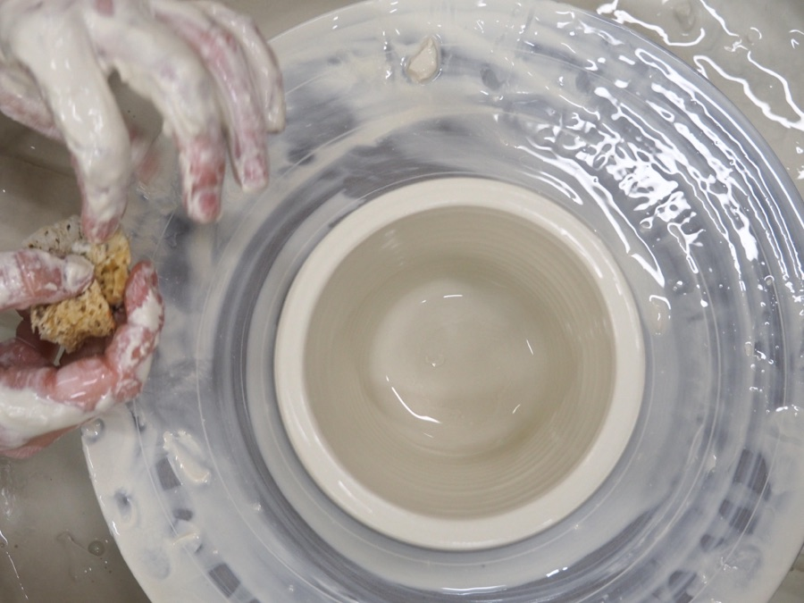
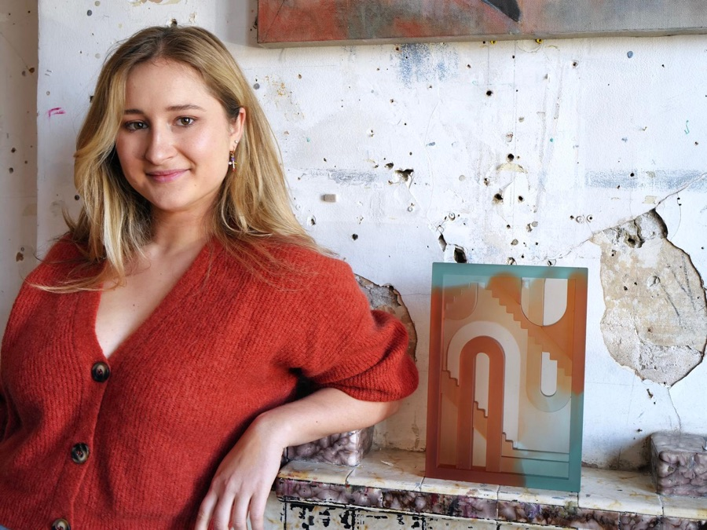
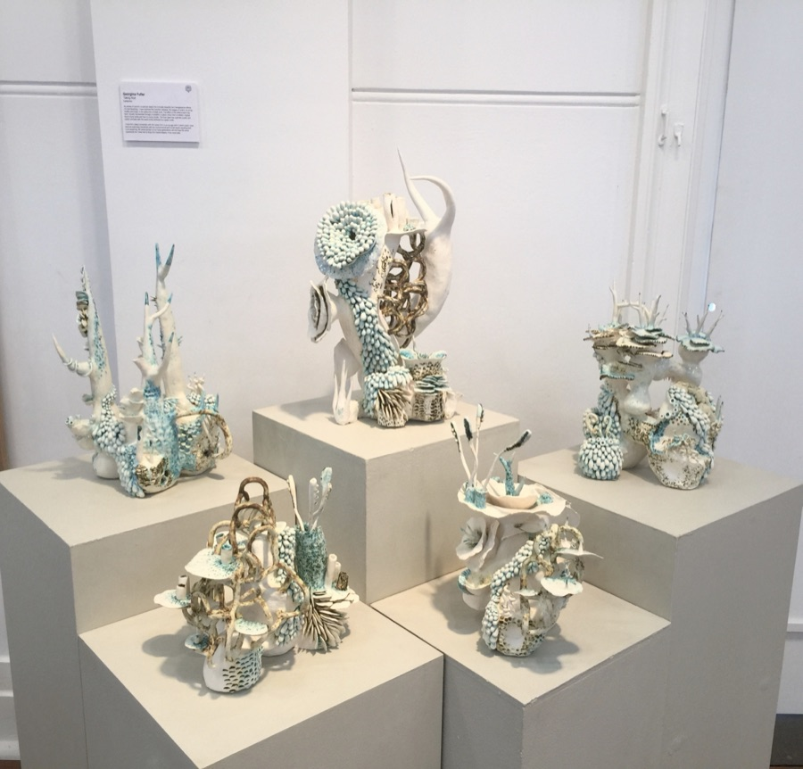
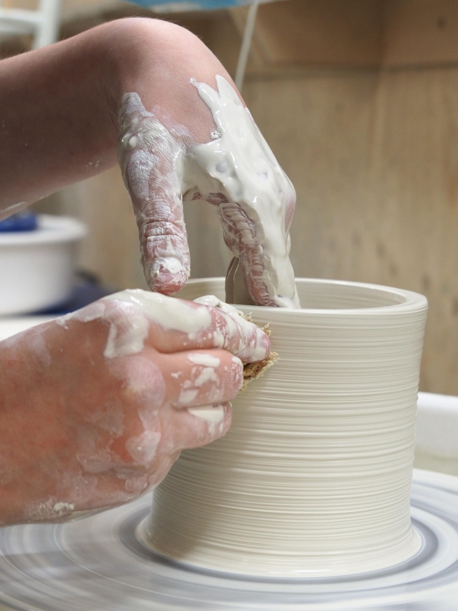
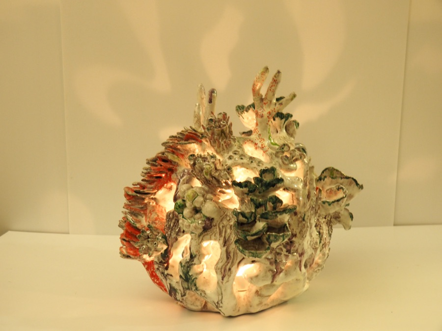

AboutGeorgina Fuller grew up in a small country town outside Sydney, a long way from any gallery, but never short on things to make art with. From an early age she moved restlessly between mediums — drawing, painting, sculpture — treating each one as a question rather than a discipline to master and stay within. That restlessness paid off quickly: in 2017, her work was accepted into Art Express and nominated for Shape, two of the most highly regarded exhibitions for Australian high school graduates in art and design.
That recognition opened the door to London. In 2018, Georgina moved to study at the University of Arts London, completing her BA (Hons) in Ceramic Design in 2021. She went on to the Royal College of Art for an MA in Ceramics and Glass, graduating in 2023 — training that gave a restless, self-taught eye the technical grounding to match it.
Now 24, Georgina lives and works in London, out of Earthworks Ceramic Studios in Brixton. Her practice runs across two distinct bodies of work. The ceramics return again and again to the ocean, a connection formed long before she left Australia — tracking coral through change, from the saturated colour of a living reef to the bleached, brittle form left behind as waters warm. It's work that holds beauty and damage in the same object, refusing to resolve one into the other.
Her glass work moves in a different direction, though it comes from the same place. Cast in translucent colour, these pieces take the shape of architecture — staircases, arches, structures that could be monuments or ruins depending on the light. Where the ceramics document loss, the glass builds: constructing new forms out of colour and light, as if offering something to stand in place of what the ceramics record disappearing.
What unites both bodies of work is a refusal to sit still in one material or one mood — the same instinct that got her noticed as a teenager in a country town outside Sydney, now sharpened into two disciplined, distinct practices.





